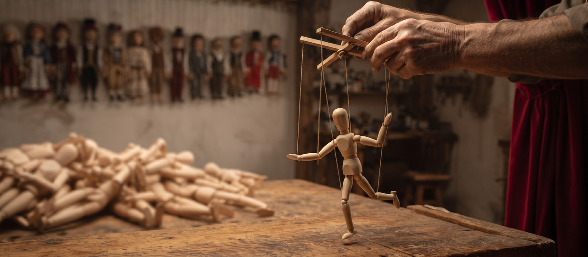
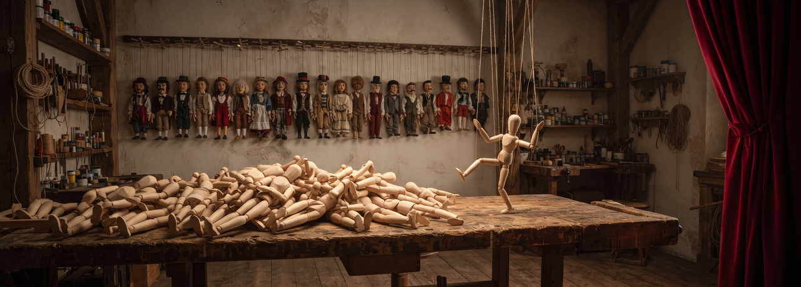
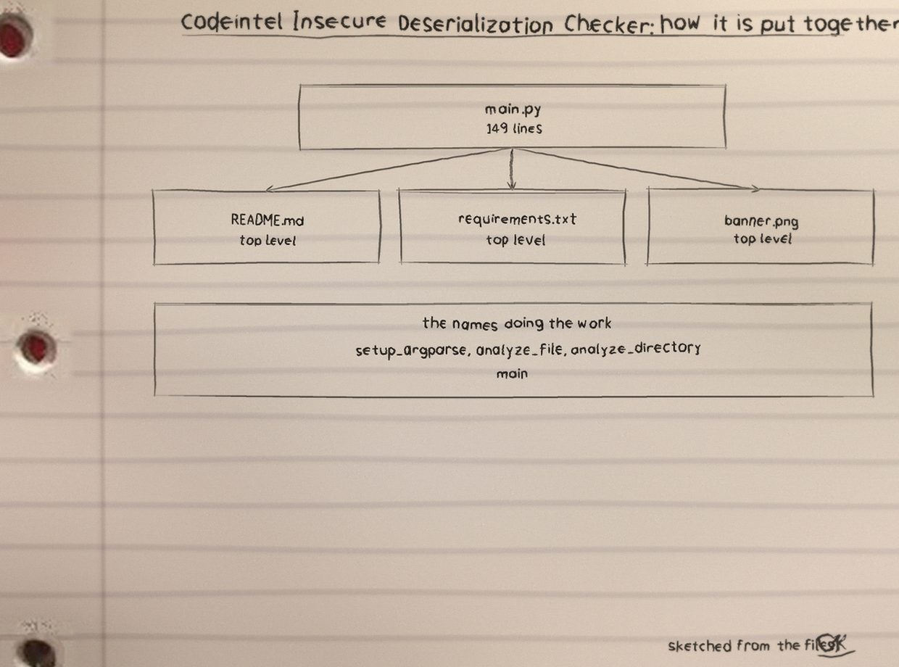
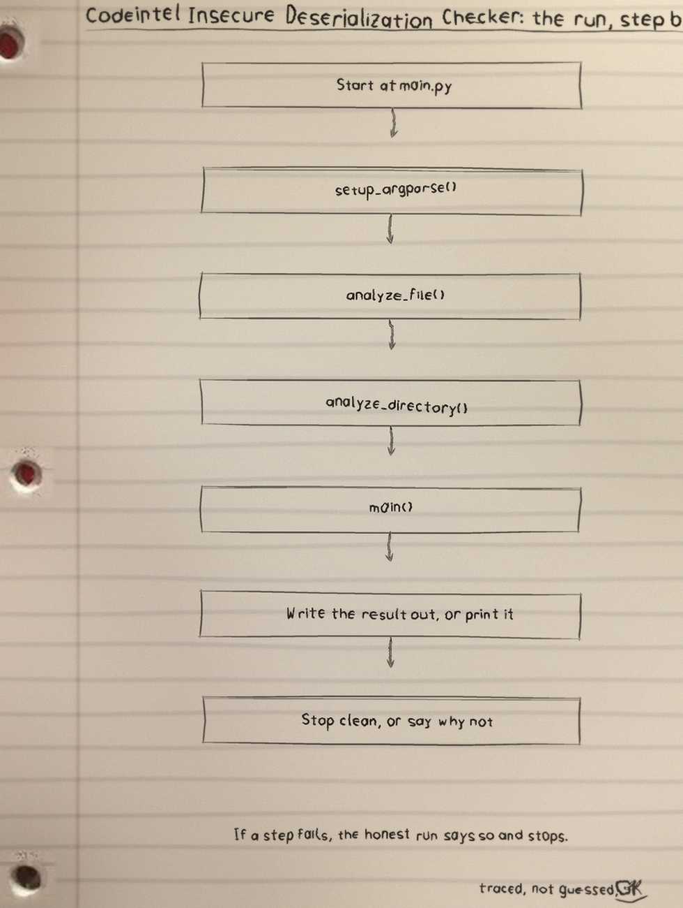
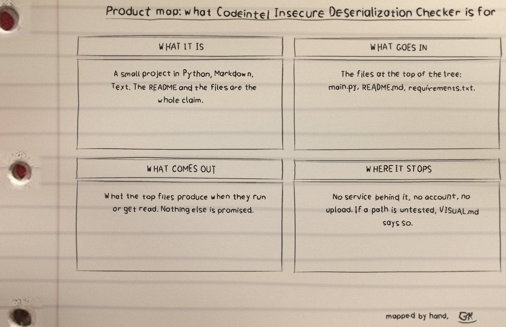

Stored, folded things watched for the moment they are lifted out and stand up live again: the calls that rebuild objects from stored data.

codeintel-insecure-deserialization-checker parses Python files into syntax trees and flags the calls that rebuild live objects from stored data. Run it as python3 main.py FILEPATH, naming one file or a directory, with -v for verbose, -e taking exclusion paths, and -o writing results to a file.
Imports are resolved before any call is matched, so a call is judged by the module it came from: import pickle as pk still names pickle, and from pickle import loads names the pair. Imports are collected from the whole file before matching, so an import at the bottom still names a call at the top.
The flagged set is loads and load on pickle, cloudpickle, dill, and marshal; jsonpickle.decode; yaml.unsafe_load; and yaml.load whose Loader is missing or lacks Safe in its name. Directory runs read only .py files.
Exclusions are plain text prefixes with no path boundary check, so excluding data also excludes a neighbouring database. A file that cannot be read or parsed is reported as not scanned, and findings or failed files both exit 1; a clean run with neither prints that none were found and exits 0.
The README clone line names the stale ShadowStrikeHQ organisation, its usage line is a placeholder, its parameter list omits the required positional filepath and leaves -v undescribed though the code help text describes it, and its closing licence line reads Copyright (c) ShadowStrikeHQ while the LICENSE file is MIT. All stand as printed and are flagged in the README.


